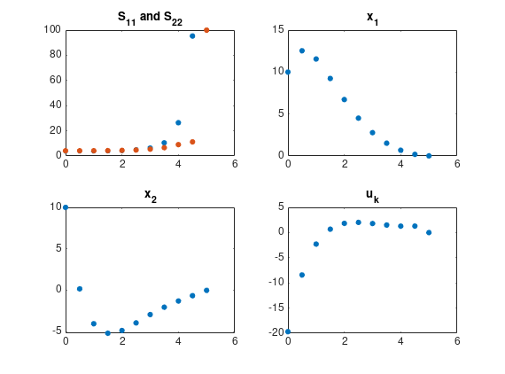

%Problem 1, Consider a scalar plant, x_{k+1} = 0.5 x_{k} + 2 u_{k} with cost J = 1/2 sum_{k=0}^{N-1}, N = 5. Find the optimal control to drive the system from x_0 = 0 to x_5 = 5; A = 0.5; B = 2; r_n = 5; R = 1; x_0 = 0; N= 5; G = 0; i_out = zeros(N,1); u_out = zeros(N,1); for i = 0:N-1 G = G + A^(N-i-1)*B*(R^-1)*B' *(A')^(N-i-1); end for i = 0:4 u = R^-1 * B' * (A')^(N-i-1) * G^-1 *(r_n - A^N * x_0); i_out(i+1) = i; u_out(i+1) = u; end disp("i "); disp(i_out'); disp("u "); disp(u_out');
i
0 1 2 3 4
u
0.1173 0.2346 0.4692 0.9384 1.8768
problem 2: Newton's law is given by x_dot = Ax + Bu = [0 1; 0 0] x = [0;1] u and the state is x = [y; dy/dt] with y being the position and u the force per unit mass input. Discretize the system using MATLAB fucntion c2d. Use sample period of T=0.5 sec. Select weighting matrics Q = I, R = I, S_N = 100 * I with I being identity matrix.
% a) Solve the Riccati difference equation to find the optimal Riccati solution. Use N = 10 sampples, so that final time is 5 sec. Plot the diagonal elements s_11 and s22 vs. time. sys = ss([0 1; 0 0], [0; 1], [1 0], 0); opt = c2dOptions('Method','tustin','FractDelayApproxOrder',3); sysd = c2d(sys,0.5) % get A and B from sysd % solve Riccati difference equation I = eye(2); A = sysd.A; B = sysd.B; Q = I; R = 1; s11 = zeros([11,1]); s22 = zeros([11,1]); N = 10; S = zeros([2,2,N+1]); S(:,:, N+1) = 100 * I; % set for S_N k = zeros([2,1,N+1]); s11(11) = 100; s22(11) = 100; for k = N:-1:1 % start from N-1 to N S(:, :, k) = A' * (inv(S(:,:,k+1)) + B*inv(R)*B')^(-1) * A + Q; K(:,:,k) = (B' * S(:,:,k+1) * B + R)^(-1) * B' * S(:,:,k+1) * A; s11(k) = S(1,1,k); s22(k) = S(2,2,k); end u = zeros([1, 1, N+1]); x = zeros([2, 1, N+1]); % u (1) = u_0 actually x(:,:,1) = [10; 10]; disp('S: '); disp(squeeze(S)); disp('K: '); disp(squeeze(K)); for k = 1:N u(:,:,k) = -K(:,:,k) * x(:,:,k); x(:,:,k+1) = A * x(:,:,k) + B * u(:,:,k); end disp("u: "); disp(squeeze(u)'); plot(s11); hold on; plot(s22); hold off; disp('s11: ') disp(s11') disp('s22: ') disp(s22') x1 = squeeze(x(1,1,:)); disp('x1: '); disp(x1'); x2 = squeeze(x(2,1,:)); disp('x2: '); disp(x1'); u_k = squeeze(u(1,1,:)); disp('u_k: '); disp(u_k'); t = 0:0.5:5; subplot(2,2,1); plot(t, s11, '.', 'markersize', 16); hold on; plot(t, s22, '.', 'markersize', 16); title('S_{11} and S_{22}'); subplot(2,2,2); plot(t, x1, '.', 'markersize', 16); title('x_1'); subplot(2,2,3); plot(t, x2, '.', 'markersize', 16); title('x_2'); subplot(2,2,4); plot(t, u_k, '.', 'markersize', 16); title('u_k'); shg
sysd =
A =
x1 x2
x1 1 0.5
x2 0 1
B =
u1
x1 0.125
x2 0.5
C =
x1 x2
y1 1 0
D =
u1
y1 0
Sample time: 0.5 seconds
Discrete-time state-space model.
S:
(:,:,1) =
4.0368 2.0646
2.0646 4.1499
(:,:,2) =
4.0435 2.0741
2.0741 4.1632
(:,:,3) =
4.0678 2.1030
2.1030 4.1976
(:,:,4) =
4.1417 2.1798
2.1798 4.2775
(:,:,5) =
4.3448 2.3651
2.3651 4.4464
(:,:,6) =
4.8755 2.7858
2.7858 4.7800
(:,:,7) =
6.2840 3.7313
3.7313 5.4147
(:,:,8) =
10.4679 5.9858
5.9858 6.6293
(:,:,9) =
26.4338 12.1443
12.1443 9.0036
(:,:,10) =
95.3311 24.4898
24.4898 11.2041
(:,:,11) =
100 0
0 100
K:
Columns 1 through 7
0.6527 0.6566 0.6680 0.6972 0.7644 0.9085 1.2052
1.3169 1.3223 1.3359 1.3663 1.4276 1.5418 1.7409
Columns 8 through 10
1.8094 2.8929 0.4535
2.0664 2.4838 2.0408
u:
Columns 1 through 7
-19.6958 -8.4336 -2.2920 0.6764 1.8188 2.0119 1.7964
Columns 8 through 11
1.4914 1.2829 1.2860 0
s11:
Columns 1 through 7
4.0368 4.0435 4.0678 4.1417 4.3448 4.8755 6.2840
Columns 8 through 11
10.4679 26.4338 95.3311 100.0000
s22:
Columns 1 through 7
4.1499 4.1632 4.1976 4.2775 4.4464 4.7800 5.4147
Columns 8 through 11
6.6293 9.0036 11.2041 100.0000
x1:
Columns 1 through 7
10.0000 12.5380 11.5599 9.2410 6.7202 4.5113 2.7813
Columns 8 through 11
1.5272 0.6841 0.1878 0.0126
x2:
Columns 1 through 7
10.0000 12.5380 11.5599 9.2410 6.7202 4.5113 2.7813
Columns 8 through 11
1.5272 0.6841 0.1878 0.0126
u_k:
Columns 1 through 7
-19.6958 -8.4336 -2.2920 0.6764 1.8188 2.0119 1.7964
Columns 8 through 11
1.4914 1.2829 1.2860 0
